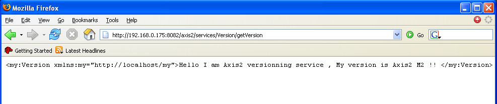

Axis2 can be configured as REST Cantainer and can be used to send and receive restful web services requests and responses. The REST Web Services can be access in two ways, using HTTP GET and POST.
REST support can be enabled in the Server side by adding the following line to the axis.xml file.
true
But it acts both as a REST endpoint as well as a SOAP endpoint. When a Message is received if the content type is text/xml andif the SOAP Action Headers are missing, then the Message is treated as a RESTful Message. Else they are treated as usual SOAP Messages.
On sending a message out, the fact that the message is RESTful or not, can be decided from the client API or by deployment descriptor of the client.
call.setDoREST(true);
There's a sample.axis2rest.MyServiceClient.java which demonstrates the usage of the above, using the echo operation of the userguide.example1.MyService of the samples.
Axis2 let the users access Web Service that has simple type parameters via the HTTP GET. For example following URL requests the version service Via HTTP GET. But the Web Services arrived via GET assumes REST . Other parameter are converted in to the XML and put them in to the SOAP Body.
http://127.0.0.1:8080/axis2/services/Version/getVersion
Result can be shown in the browser as follows
For an example request http://127.0.0.1:8080/axis2/services/Version/getVersion/code> will be converted to the following SOAP Message for processing by Axis2
<soapenv:Envelope
xmlns:soapenv="http://schemas.xmlsoap.org/soap/envelope/"
xmlns:xsd="http://www.w3.org/2001/XMLSchema"
xmlns:xsi="http://www.w3.org/2001/XMLSchema-instance"
xmlns:wsa="http://schemas.xmlsoap.org/ws/2004/03/addressing">
<soapenv:Body>
<axis2:getVersion xmlns:axis2="http://ws.apache.org/goGetWithREST" ></axis2:getVersion>
</soapenv:Body>
</soapenv:Envelope>